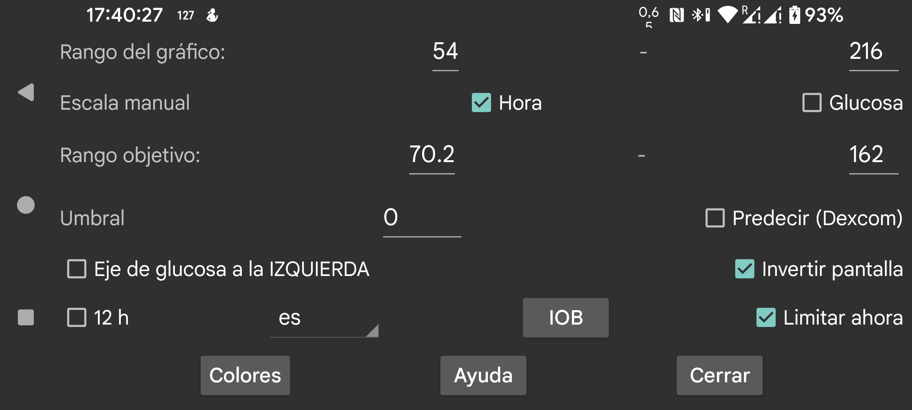

Cambia los colores del gráfico, los escaneos y las cantidades.
En LibreLink los valores de glucosa mostrados van de 0 a 21 mmol/L, salvo que algún valor los supere. En Juggluco puedes indicar tú mismo el valor mínimo y el máximo. Estos límites solo se usan si todos los valores mostrados en la pantalla están dentro de ellos. Por ejemplo, si el rango del gráfico es 3-9 y todos los valores visibles están entre 5 y 6 mmol/L, el eje irá de 3 a 9 mmol/L. Si un valor queda fuera de esos límites, el rango se amplía para que todos los valores quepan en pantalla.
Si está activada la opción Escala manual para glucosa, puedes cambiarlo moviendo el dedo verticalmente en la mitad superior o inferior de la pantalla. En la mitad superior cambias el valor máximo mostrado; en la inferior, el mínimo. Esto también puede hacerse en el gráfico de resumen, en estadísticas.
La zona fuera del rango objetivo se colorea de forma distinta. El valor inferior se muestra como una línea roja. En la pantalla de estadísticas se indica qué porcentaje de las mediciones estuvo dentro del rango objetivo.
Coloca a la izquierda de la pantalla los números del nivel de glucosa.
Aplica un umbral a la velocidad de cambio de la glucosa. Solo cuando la velocidad de cambio se aparte de 0 en la cantidad indicada, la flecha dejará de ser horizontal. Puedes usar valores entre 0 y 0,8. El umbral evita dar demasiado significado a cambios absolutos muy pequeños. Es totalmente posible que la velocidad de cambio muestre una glucosa subiendo lentamente cuando en realidad está bajando. El umbral sirve para ser más prudente en la interpretación.
Gira la pantalla. Esta opción está activada por defecto porque, de lo contrario, al escanear a veces tocaba OK sin querer.
A veces se pide un modo vertical, pero para mostrar el gráfico resulta claramente inadecuado, por eso lo desactivé.
IOB es una medida de cuánta insulina de dosis anteriores sigue activa. Para usarla debes introducir las dosis bajo una etiqueta de la categoría Insulina de acción rápida. En menú izquierdo → Ajustes → Intercambiar datos → Servidor web → Enviar cantidades puedes indicar qué etiquetas corresponden a esa categoría.
Cuando Fijar ahora está activado, el periodo de tiempo mostrado en la pantalla se desplaza hacia la izquierda para que el momento actual quede siempre en el mismo punto. Algunos usuarios ejecutan Juggluco en un emulador Android en un equipo situado a varios metros. Si Fijar ahora está desactivado, la posición del valor actual de glucosa va desplazándose hacia la derecha y al cabo de unas horas deja de verse. Entonces hay que acercarse al equipo y desplazar la pantalla unos centímetros. Con Fijar ahora activado, esa molestia desaparece.
Juggluco se muestra en el idioma elegido. Si no se selecciona ningún código de idioma, se usa el idioma del sistema.